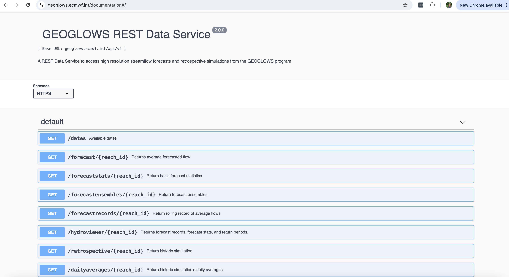
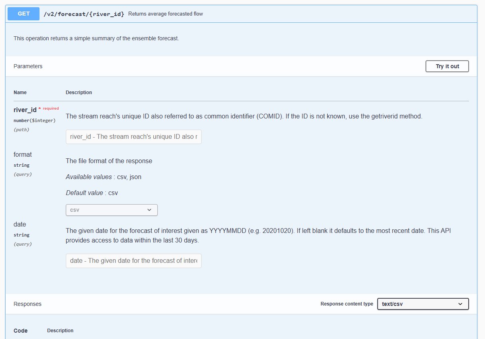
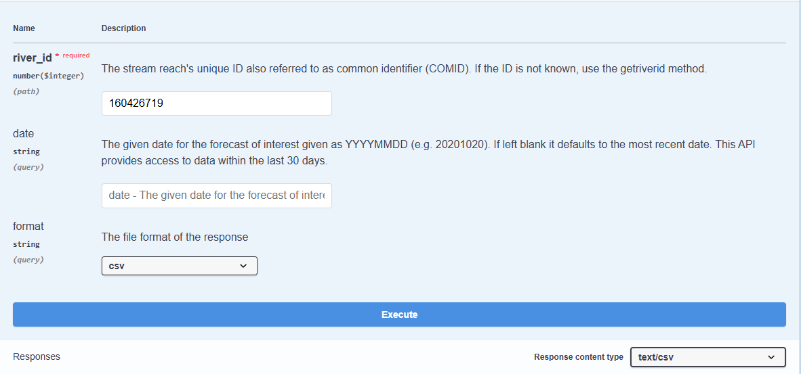
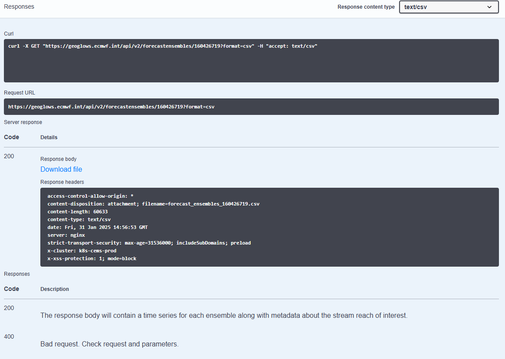

The API is not necessary for most users
Most users do not need this tutorial. All the forecast and retrospective simulation products are available for queries, bulk downloads, and via data service. However, the instructions for querying data are the fastest and most convenient (and cheapest for GEOGLOWS) for most uses. Please follow the tutorial on querying river data before continuing to this section.
There is programmatic access to RFS streamflow data through a REST API, allowing users to easily integrate global hydrological data into their applications. With this API, developers and researchers can retrieve historical and forecasted streamflow data in CSV or JSON format, enabling custom analysis and visualization. The API provides access to all retrospective and forecast data. For more information, visit the RFS API Documentation.

Using the API
In order to use the API, most functions require you to know your river ID number. You can find more information about finding your river number here: Finding River Numbers Tutorial. You can download the GIS data by VPU through the data catalog or select a stream on the web application and get a river number that way.
Using the API Website
To use the API website, follow these steps:
Step 1: Click the blue “Get” button next to the command you are interested in. This opens a window where you can enter your parameters.

Step 2: Before entering any numbers, click “Try it out” to enable input fields. This allows you to enter numbers and select response formats.
Step 3: Enter the required information:
- A 9-digit river ID number (also known as a COMID or Link Number) in the
river_idfield. This is required. - Choose either
csvorjsonfrom the dropdown menu underformat. The default selection iscsv. - For forecast data queries, enter a date in
YYYYMMDDformat. If left blank, it will return the most recent forecast.

Step 4: Click the blue “Execute” button at the bottom of the screen. The system will process your request and load for a few seconds. Once finished, you will receive a response code along with an option to download the file.

Accessing the API Using Python
One of the easiest ways to access the API is through Python. There is a GEOGLOWS Python package (documented here: RFS API Documentation) that contains commands for basic analysis and querying specific types of data.
This Python notebook provides examples of using the API in Python, as well as utilizing the Python package: Programmatic_Access Colab.ipynb
The API can be used in applications requiring streamflow data and can be integrated directly into Python workflows.